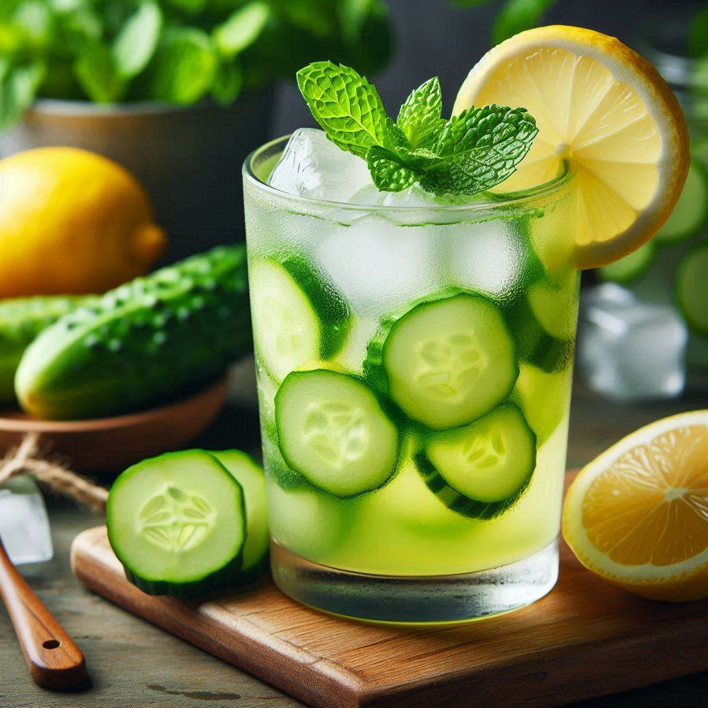

Cucumber Lemon Juice

Description
Cucumber lemon is a refreshing beverage made by combining freshly squeezed lemon
juice with cucumber slices. It's a hydrating and cooling drink, perfect for hot
days. The tanginess of the lemon pairs well with the mild flaor of cucumber,
creating a delightful balance. You can add a touch of sweetness with honey or
sugar if desired.
Ingredients
-
1 cup water
-
1/2 cup white sugar
-
1 cucumber, sliced
-
6 lemons, juiced
Steps
-
Make the simple syrup: Combine water and sugar together in a saucepan over
medium heat; heat unti just about to boil and sugar has dissolved. Place in
refrigerator until cool, about 30 minutes.
-
Blend cucumber in a blender or food processor until mashed into a pulp.
Pour cucumber pulp into a find mesh strainer placed over a bowl; allow to sit
until you have about 2/3 cup of cucumber juice in the bowl, about 15 minutes.
-
Stir simple syrup, cucumber juice, and lemon juice together in a pitcher.
Serve cold.